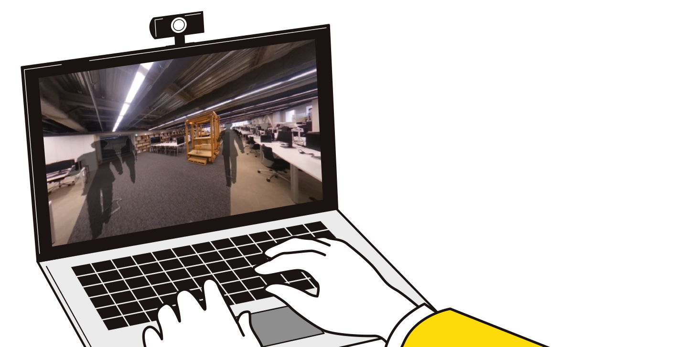
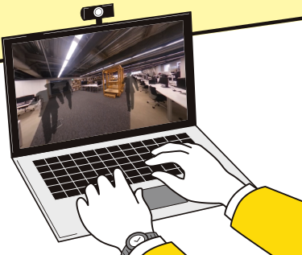
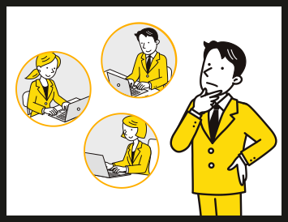
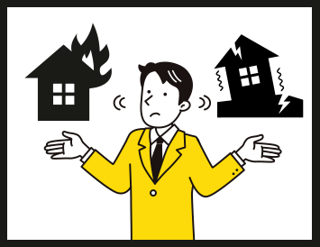
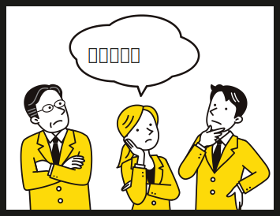
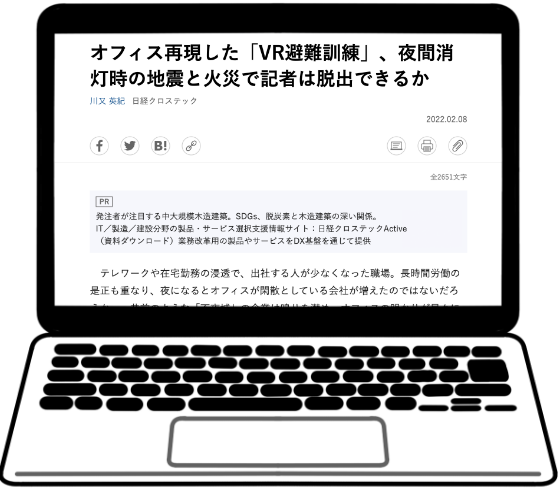

リモートによるコスト負担
コロナでリモートも増え、まとまった人数の避難訓練が難しく、参加準備の時間もコストも負担が大きい。

単調なシチュエーション
夜間の火災など甚大な被害の事例が発生しているが、シチュエーション別の避難に対応ができていない。

避難訓練のマンネリ化
毎年同じ内容の避難訓練で、マンネリ化して参加者も集まり難く、蓄積も感じられない。
バーチャル避難訓練とは？
バーチャル避難訓練とは、リモート下での避難訓練を中心に様々な案内や誘導・検証で役立つことができるVRツールです。
避難訓練をより実施し易く簡単なものにするだけでなく、分かり易く安心できる建物の普及や既存建物の防災対策への応用も目指しています。


日経X TECHにて掲載されました！
日経クロステックの、「川又Dが行く！建築デジカツ最前線」で取材頂きました。避難訓練に関する課題や本ツールの操作感について解説頂いています。
株式会社日建設計（防災・BCPグループ）
日建設計は、建築の設計監理、都市デザインおよびこれらに関連する調査・企画・コンサルティング業務を行う プロフェッショナル・サービス・ファームです。「価値ある仕事によって社会に貢献する」という基本理念を尊重し、よりよい社会環境づくりに取り組んでいます。
所在地：東京都千代田区飯田橋2-18-3
URL： https://www.nikken.jp

株式会社ジオクリエイツ
ジオクリエイツは、「すべての人に最高の空間体験を！」をビジョンに掲げ、空間体験価値を定量化する「ToPolog(トポログ)」を展開しています。設計者・事業主・エンドユーザー間の課題を捉え、VRでの視線や脳波を測定・推定でデータベース化・AI化して、不動産や小売などの空間デザインの民主化に取り組んでいます。
所在地：東京都港区西新橋1-7-5 BIRTH TORANOMON
URL： https://www.geocreates.net